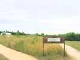
Avord, le Parc Arboré : un beau parc, d'abord, beaucoup de surface pour le cerf-volant. Un parc curieux, aussi, avec un amphithéâtre de pierre et surtout beaucoup d'arbres différents, des vignes, des fruitiers, tout cela soigneusement étiqueté. Il y a même une zone expérimentale laissée vivre sa vie après défrichage complet pour voir comment elle se repeuplerait.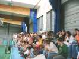
Le vendredi soir, nous sommes invités à la soirée présentée par le Collège, dans le gymnase. Beaucoup de public intéressé...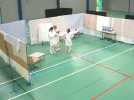
D'abord de petites pièces, puis de la danse, mais on n'est pas resté jusqu'au bout, on n'avait pas d'enfants dans le coup, nous !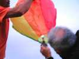
Pour passer le temps ensuite, Joel sort une montgolfière en papier, mais avec les champs de blé mûr dans l'axe du vent, on n'ose pas l'allumer !...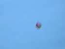
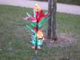
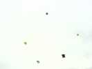
Le samedi, on commence la journée avec des Rokkakus, dont un, un peu raté, n'a que 5 côtés !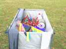
Côté des machins, là, vous savez bien... Joël amène sa remorque faite sur mesure à la taille des moulinets démontés, et elle même démontable pour entrer dans la soute du camping-car. Les moulinets, eux, tout le monde les connaît, maintenant...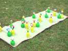
Marie-Claude insiste pour que j'annonce que ses bonnes femmes ont toutes trouvé chaussure à leur pied... ce qui double la taille de son jardin !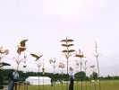
Avec les cerfs-volants et les maquettes télécommandées, il y avait 3 artistes girouettiers...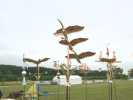
...avec des productions sur tous les thèmes : des drakkars, des scènes de chasse, même des coqs, évidemment !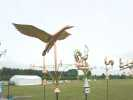
Et plein d'oiseaux, un canard, une gardeuse d'oies, en cuivre, en laiton et en je-sais-pas-quoi blanc (maillechort ?)...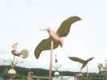
...une bécasse...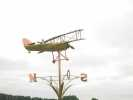
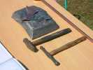
Ils exposaient leurs outils : des marteaux à repousser et un tas en plomb pour galber les pièces...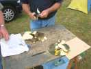
L'un d'eux confectionnait même sur place (ils peuvent créer sur un sujet commandé)...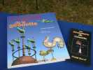
Et des manuels du parfait girouettier ou au moins de l'amateur de girouettes... Ca devient très demandé, ils en vivent sans problème.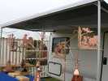
Il y en avait aussi deux autres, l'un qui faisait dans le fer "bronzé", sur bases cuivre ou terre cuite...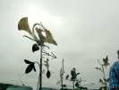
... l'autre dans le fer volontairement rouillé pour ne pas faire flambant neuf.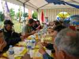
Bon, c'est pas tout, à midi, pause déjeuner. Pas très vastes, les plateaux, mais z'avez qu'à manger du pain, ça, y en a !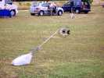
Et ça repart. Jean-Marc a un montage amortisseur simple et efficace. De toutes façons, le vent va tomber l'après-midi, il suffira de poser la bobine par terre !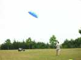
Après déjeuner, il pourra encore rouler un peu en char. Arrêté, cependant par un monsieur qui court vers lui ! Mais pourquoi donc ?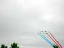
Eh bien c'est que la Patrouille de France va nous faire l'honneur d'un passage, rien que pour nous !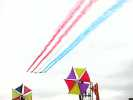
Je voulais les prendre au dessus des cerfs-volants, hé ben ils nous ont interdit de voler en même temps. Mais les moulinets de Joel ont été autorisés...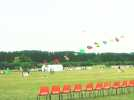
L'après-midi, le vent est tombé. Mais Marc fera quand même voler sa roue, sa pieuvre, son train de Flares au prix d'une grosse dépense musculaire !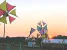
Au soir les JdV sont à peu près rangés sauf les irréductibles...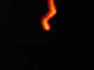
Et le vent ayant tourné, on se permet une petite montgolfière avec charge réduite. On ne va plus vers les champs de blé, mais vers le dépôt nucléaire de la base... On n'a pas eu d'écho le lendemain...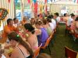
Dimanche matin, petit-déjeuner café, chocolat, croissants, etc. A midi, apéritif, puis déjeuner. Ah oui, on a aussi fait voler des cerfs-volants en cette matinée où subsistait un peu de vent !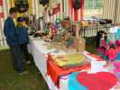
Les Gosselin ont tenu boutique avec des CVs pour enfants et des miniatures en carbone de 0,2 mm. Marc et Françoise présentaient leurs oiseaux indonésiens à l'autre bout du barnum.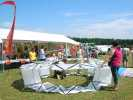
Marc avait sorti une roue conique, c'est nouveau. Dommage elle est devenue plate après montage. Mais une idée à creuser ?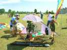
Gaby avait planté son jardin beaujolais, avec le robinet perpétuel tirant le suc du cep !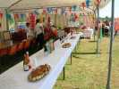
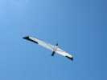
Mais on a quand même bien volé ! L'Albatros de Jean-Marc, après un premier atterrissage sur le bec cause réglage oublié, a plané impeccablement quand le vent était suffisant...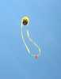
Les Gosselin avaient lancé leur négresse blonde !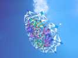
Et Thierry a fait voler (c'est le cas de le dire, il fallait courir) son diadème dont on ne se lasse pas.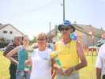
Gaelle et Bernard ont eu des prix pour les cerfs-volants les plus hauts (500 m, pour le combattant de Bernard, heureusement la Base Aérienne était fermée...).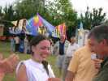
Et Fanny a eu aussi un prix et un cerf-volant signé de tout le monde, pas pour ses beaux yeux (et pourtant !) mais pour les services rendus à la communauté...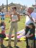
Après les cervolistes, tous les maires des environs ont eu droit à la plaque commémorative de la rencontre (c'était la fête des maires ?), comme les président(e)s des associations.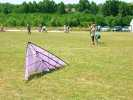
Gaby a encore fait voler un peu son delta à 3 étages !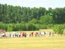
Les maquettistes ne pouvaient se décider à arrêter les vols...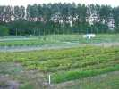
...mais il a finalement fallu laisser les fraisiers et les poireaux pousser tranquillement au bas du Parc Arboré.